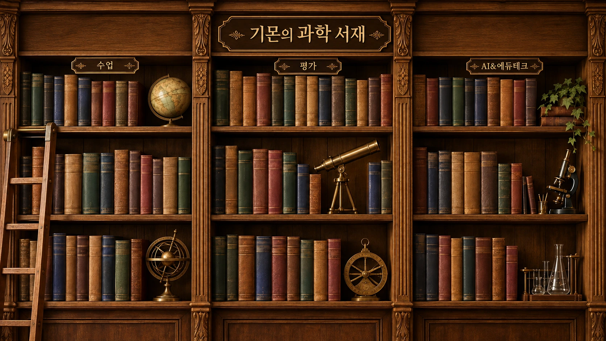

THE SCIENCE LIBRARY · EST. 2026
책등에 커서를 올리고, 꺼내어 펼쳐 보세요.

수업
평가
AI&에듀테크
❧ 과학을 더 가까이, 일상을 더 특별하게 ❧
책을 정리하는 중...
등록된 책만 모아볼 수 있습니다.
과학 수업
BOOKMARK · WEB ADDRESS
https://example.com
책의 안내
책 설명이 표시됩니다.
아직 링크를 등록하지 않은 책입니다. library-data.js에 주소를 추가해 주세요.
library-data.js